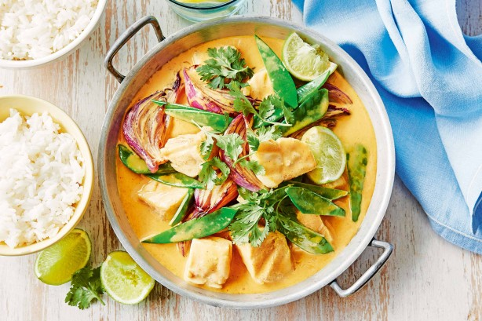

Fish and Vegetable Curry Recipe
Ingredients
- 1 onion
- 4 cloves of garlic
- 1.5 cup chicken bone broth
- 1 green capsicum
- 1 chilli
- 1 broccoli
- 1/4 cup vinegar
- 100g beans
- Yellow curry paste
- 100g pumpkin
- 1kg fish
- 1/2 lemon
- 2 cans of coconut milk
Instructions
-
Cook the onion until
half-cooked.
-
Add the capsicum and chilli and
cook until half-cooked.
-
Add the broccoli and cook until
half-cooked.
-
Add the beans and cook until
half-cooked.
-
Add the garlic and cook until
half-cooked.
- Pour in 1/4 cup vinegar.
- Add the pumpkin.
- Shut the lid and let it cook for 3 minutes.
-
Open the lid and
add the bone broth.
-
Add 2-3 teaspoons of yellow curry paste.
- Shut the lid and cook for another 3 minutes.
-
Open the lid and
add the coconut milk.
- Cook until vegetables reach the desired texture.
-
Add the fish and let it sit on
the flame for 10 minutes.
- Turn off the heat. Let it cool slightly.
-
Squeeze in the lemon juice 5
minutes before serving.